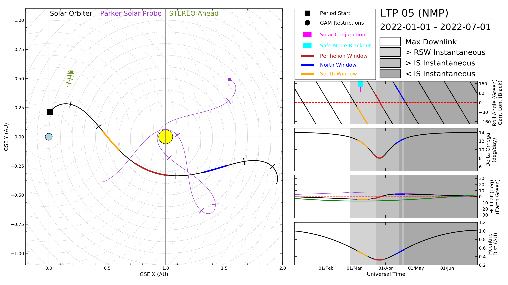

Welcome to the homepage for the Solar Orbiter magnetometer project. Here you can download magnetometer data, submit bespoke data requests, check probe status and keep up to date with the latest project developments.
| Sensor | Status | Up-time (%) [last 6 weeks] | Up-time (%) [all-time] | Most recent data-point |
|---|---|---|---|---|
| MAG Inboard | Online | 100 | 100 | 2019-07-22 09:21:13 UTC |
| MAG Outboard | Online | 100 | 100 | 2019-07-22 09:21:17 UTC |
Last known location (2019-07-22 09:29:36):
To download data in raw or pre-processed formats please use the tool below.
Your data will be downloaded in either CSV or XML format.
Files above 20MB will be zipped.
Fields marked with an asterisk are required.